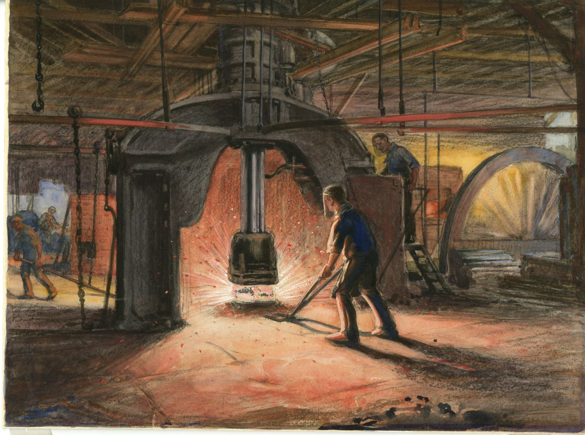

Een laagoven is een voorganger van de modernere hoogoven voor de winning van ijzer uit ijzererts. In deze oven, die een hoogte had van hoogstens 3 meter, werden lagen ijzererts en houtskool op elkaar gestapeld.
De laagoven kon slechts een lagere temperatuur dan een houtskoolhoogoven bereiken, ca. 1200 °C in plaats van 1500 °C, met als nadeel dat het ijzer niet in vloeibare vorm gewonnen kon worden, maar als een gesinterde massa die in de slak zat. Later kon wel een smelt worden bereikt en ontstond gietijzer. Door afwisselend te verhitten en te hameren werd het ijzer gezuiverd en het koolstofgehalte omlaag gebracht, zodat welijzer, smeedijzer, ofwel staal ontstond. Hiervan werden onder meer wapens gemaakt. Doordat het ijzer niet smolt tijdens dit proces, had het ook geen homogene structuur.  In 1784 werd de puddeloven (dry puddling) uitgevonden door Henry Cort. Hiermee kon de staalbereiding voor het eerst op industriële schaal plaatsvinden. Dit was een vlamoven. De vlam streek over het ijzer, waardoor het ontkoold werd en er een deegachtige massa ontstond. Ook hier moest door smeden de slak weer uit worden verdreven. Het aldus ontstane puddelijzer had dus eveneens geen homogene structuur.